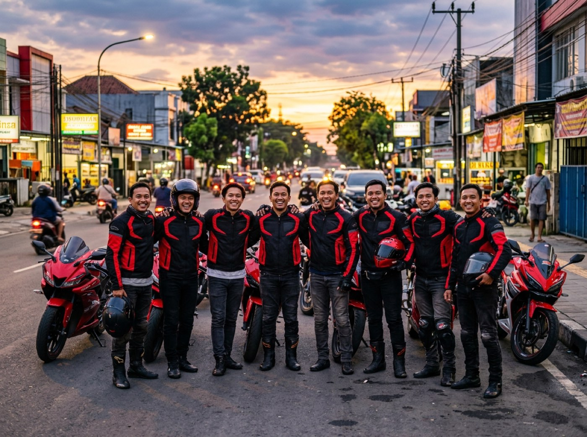

Visi
Menjadi komunitas pemilik Ducati yang solid, aman, dan bermanfaat bagi sesama rider serta masyarakat.
Komunitas Ducati Indonesia lahir dari kecintaan para pemilik Ducati pada jalan raya, persaudaraan, dan keselamatan berkendara.

Tegas di jalan, akrab di luar jalan, dan saling menjaga.
Menjadi komunitas pemilik Ducati yang solid, aman, dan bermanfaat bagi sesama rider serta masyarakat.
Rumusan visi, misi, dan nilai di atas adalah draf contoh dan mengikuti AD/ART resmi saat dipublikasikan.
Nama pengurus akan diperbarui setelah data resmi tersedia.